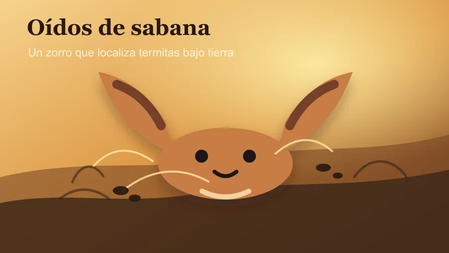

El zorro que oye termitas bajo tierra
El zorro orejudo usa pabellones de hasta 13 centímetros para localizar insectos excavando bajo el suelo de la sabana.
El zorro orejudo parece diseñado por alguien que primero dibujó las orejas y luego recordó añadir el resto del animal. Según el Smithsonian National Zoo, esos pabellones pueden alcanzar 13 centímetros y no son solo decoración: le permiten detectar escarabajos y termitas moviéndose bajo tierra.
Su dieta salvaje es casi una declaración de intenciones: alrededor del 90 % son insectos, especialmente termitas cosechadoras. Para crujir semejante menú, este cánido tiene entre 46 y 50 dientes, más que cualquier otro mamífero placentario, y una mandíbula preparada para masticar rápido. Vamos, un detector de metales biológico, pero para bichos con patas.
La vida social también acompaña al truco. Estos zorros suelen vivir en pequeños grupos familiares, cavan madrigueras con varias salidas y a veces aprovechan el trabajo en equipo: uno abre el termitero y todos comen antes de que el bufé se vuelva a esconder. La sabana no regala nada, pero unas orejas enormes ayudan bastante.
Fuente: Smithsonian National Zoo — https://nationalzoo.si.edu/animals/news/meet-bat-eared-fox-unusual-animal-can-hear-insects-burrowing-underground
Volver a la carta